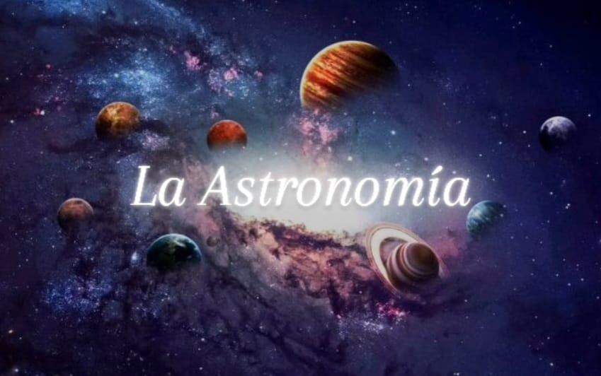

Bienvenido al fascinante mundo de la Astronomía
La astronomía es la ciencia que estudia los cuerpos celestes del universo, como planetas, estrellas, cometas y galaxias. Es una de las ciencias más antiguas y sigue siendo una fuente de asombro y descubrimiento.
Explora nuestro sitio y aprende sobre el cosmos.
Contenido destacado:
- Planetas del Sistema Solar
- Tipos de Estrellas
- Universos de estrellas
- Tipos de Fenómenos Astronómicos
- La carrera hacia las estrellas
- Herramientas para observar el universo
- Últimos descubrimiento
- Videos y Audios
- Tipos de Restos Rocosos
Curiosidades
| Objeto | Distancia a la Tierra |
|---|---|
| Sol | 150 millones de km |
| Proxima Centauri | 4.24 años luz |